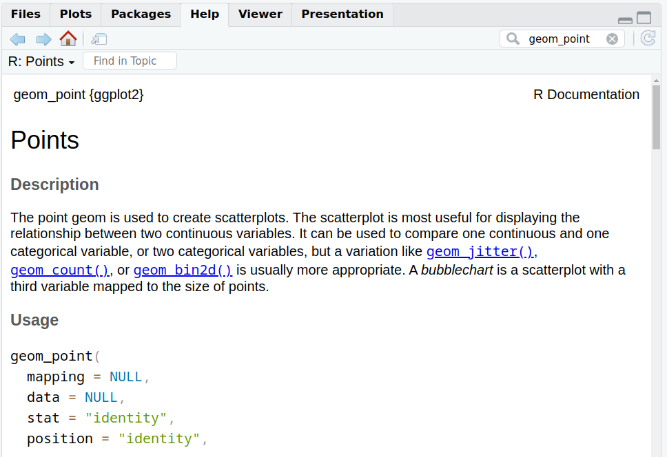

8.2 Scatter plot
8.2.1 Base plot
We can start from the geneexp object, that holds the content of file expression_20genes.csv: we want to plot sample1 on the x axis and sample2 on the y axis.
The base layer will be the following:

Copy-paste this in the console, and hit Enter.
As you can see, nothing is plotted yet: the base is set.
Adding to the base layer the geometrics called geom_point(), we tell ggplot to produce a scatter/point plot:
# This line is a comment: a comment is not interpreted by R.
# Example of a scatter plot: add the geom_point() layer
ggplot(data=geneexp, mapping=aes(x=sample1, y=sample2)) +
geom_point()
Please, copy the code above in your script, and hit Enter!
Your plot should appear in the “Plots” tab in the bottom-right panel.
8.2.2 Customize the points
geom_point() can take parameters, including the point color and size:
Color all points in red:

Increase point size (default size is 1.5):

This is a good place to introduce the help pages of functions.
Functions in ggplot2 (and tidyverse in general) are richly documented.
While documentation can be quite technical it is always good practice to take a look at it.
You can access the help page of a function in the Help tab in the bottom-right panel. Give it a try with “geom_point”:

Back to our customization: let’s set different shapes for the points!
This is done by setting the shape parameter in geom_point().
Points can become, for example, triangles:
ggplot(data=geneexp, mapping=aes(x=sample1, y=sample2)) +
geom_point(color="red", size=2.5, shape="triangle")
See more options in the following image:

Image from ggplot2 documentation
Note that you can also replace the points by any character, the following way:
ggplot(data=geneexp, mapping=aes(x=sample1, y=sample2)) +
geom_point(color="red", size=2.5, shape="$")
8.2.3 Add more layers
We can add more layers to the plot, using the same structure (+ layer_name())
8.2.3.1 ggtitle()
Add a title using the ggtitle() layer:
ggplot(data=geneexp, mapping=aes(x=sample1, y=sample2)) +
geom_point(color="red", size=2.5, shape="diamond") +
ggtitle(label="my first ggplot")
label is a parameter of ggtitle() function.
8.2.3.2 Background
Not a big fan of the grey background?
This is the default “theme”, but there are more options.
For example:
ggplot(data=geneexp, mapping=aes(x=sample1, y=sample2)) +
geom_point(color="red", size=2.5, shape="diamond") +
ggtitle(label="theme grey (the default theme)") +
theme_grey()
ggplot(data=geneexp, mapping=aes(x=sample1, y=sample2)) +
geom_point(color="red", size=2.5, shape="diamond") +
ggtitle(label="theme linedraw") +
theme_linedraw()
ggplot(data=geneexp, mapping=aes(x=sample1, y=sample2)) +
geom_point(color="red", size=2.5, shape="diamond") +
ggtitle(label="theme bw = black and white") +
theme_bw()
ggplot(data=geneexp, mapping=aes(x=sample1, y=sample2)) +
geom_point(color="red", size=2.5, shape="diamond") +
ggtitle(label="theme void") +
theme_void()
Here is a good page to check the different backgrounds: https://ggplot2-book.org/themes#sec-theme
Note that you can also change some settings globally as you use a new theme, e.g.
- base_size: by default, 11.
- base_family: the font (uses by default arial or sans). To check the fonts that are available, type systemfonts::system_fonts()$family
- base_line_size: by default, base_size/22.
- base_rect_size: by default, base_size/22
# get full list of available fonts in your system with:
ggplot(data=geneexp, mapping=aes(x=sample1, y=sample2)) +
geom_point(color="red", size=2.5, shape="diamond") +
ggtitle(label="my first ggplot") +
theme_bw(base_size=18, base_family = "Laksaman", base_line_size = 2, base_rect_size = 4)
8.2.3.3 Regression line
Add a regression line with geom_smooth(). A smoothed line can help highlight the dominant pattern/trend.
ggplot(data=geneexp, mapping=aes(x=sample1, y=sample2)) +
geom_point(color="red", size=2.5, shape="diamond") +
ggtitle(label="my first ggplot") +
theme_linedraw() +
geom_smooth()
Remove the confidence interval:
ggplot(data=geneexp, mapping=aes(x=sample1, y=sample2)) +
geom_point(color="red", size=2.5, shape="diamond") +
ggtitle(label="my first ggplot") +
theme_linedraw() +
geom_smooth(se=FALSE)
Different methods can be used to fit the smoothing line:
- “lm”: linear model.
- “glm”: generalized linear model.
- “gam”: generalized additive model.
- “loess”: local polynomial regression.
- A function (more advanced)
By default, the smoothing method is picked based on the size of the largest group across all panels.
ggplot(data=geneexp, mapping=aes(x=sample1, y=sample2)) +
geom_point(color="red", size=2.5, shape="diamond") +
ggtitle(label="my first ggplot") +
theme_linedraw() +
geom_smooth(se=FALSE, method="lm")
More advanced (as reference, or if someone asks): add correlation coefficient:
You can add the correlation coefficient between the 2 variables, using another function from the {ggpubr} package:
ggplot(data=geneexp, mapping=aes(x=sample1, y=sample2)) +
geom_point(color="red", size=2.5, shape="diamond") +
ggtitle(label="my first ggplot") +
theme_linedraw() +
geom_smooth() +
ggpubr::stat_cor(method = "pearson", label.x = 3, label.y = 30)